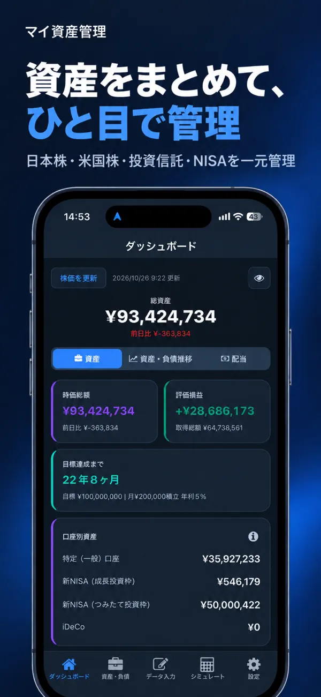
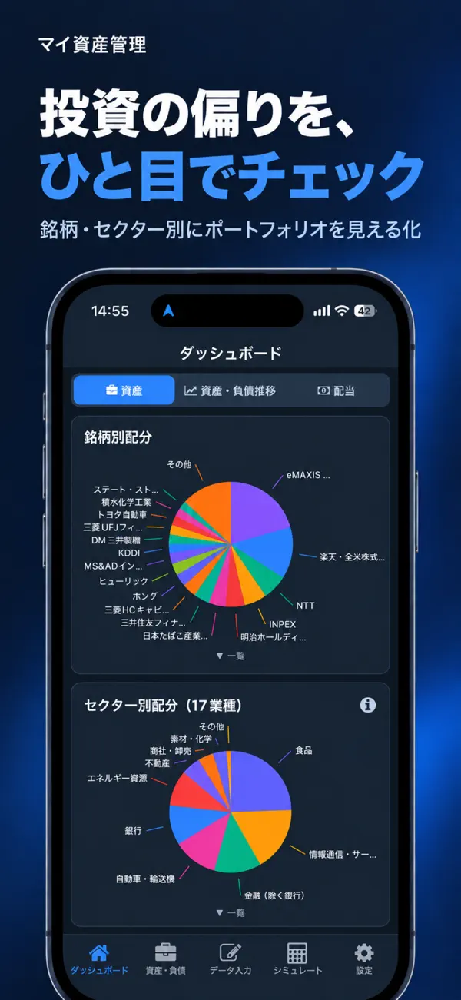
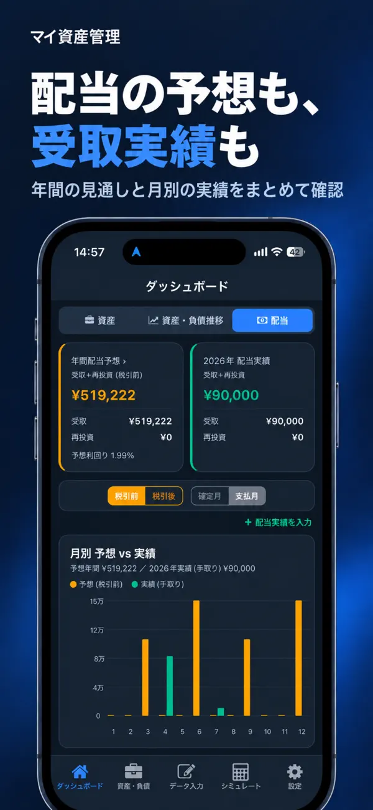
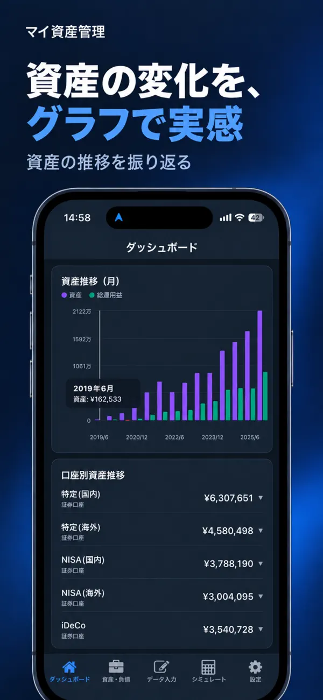
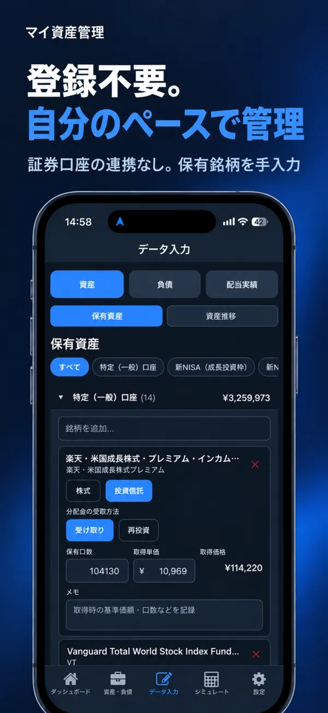
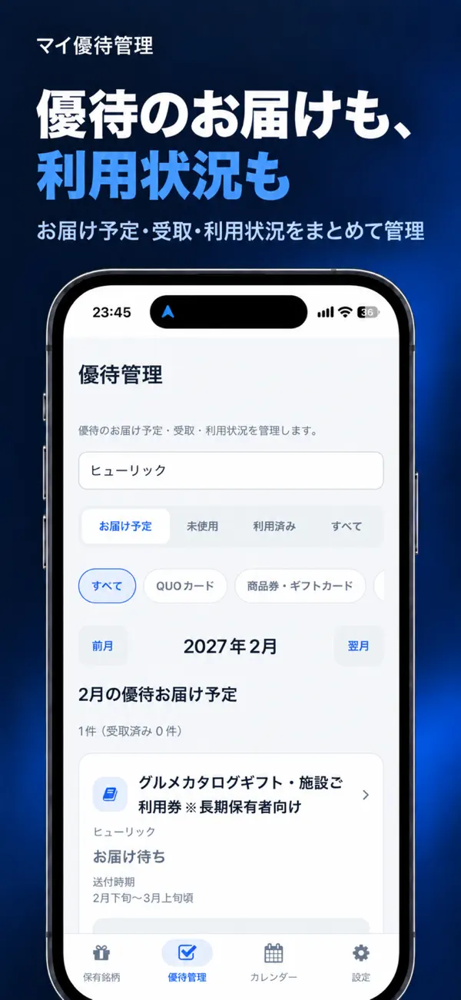
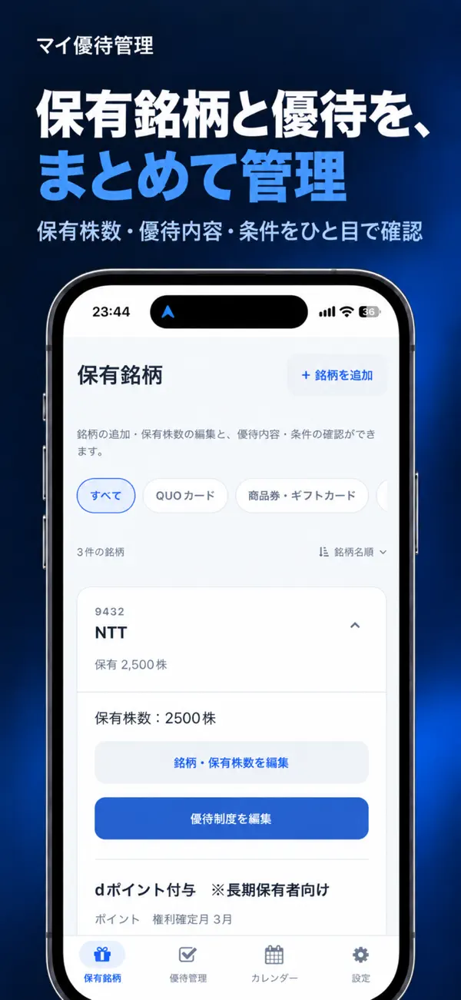
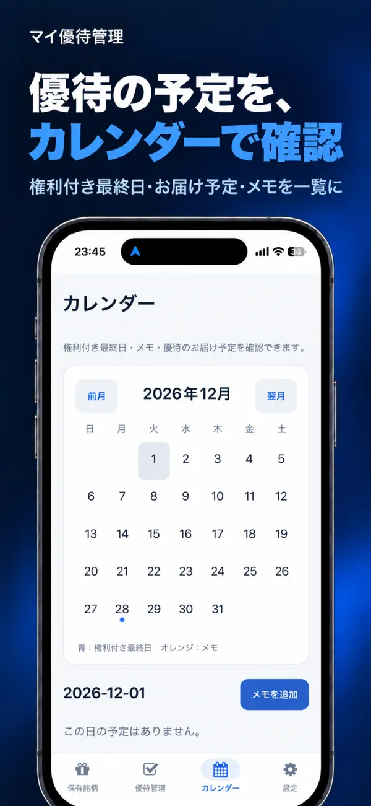

複数口座をまとめて管理
特定・一般口座、NISA、iDeCo、企業型DCに対応。口座別の資産額や含み損益を確認できます。
BALANCE WORKS APPS
資産の変化を知る。届いた優待を楽しむ。
あなたの投資生活を支える、2つの管理アプリ。
ASSET & DIVIDEND MANAGEMENT
日本株・米国株・投資信託から、NISA・iDeCoまで。複数口座の保有資産と配当金、日々の資産の変化をまとめて確認できます。
基本機能無料 · 広告非表示のアプリ内購入あり
マイ資産管理の使い方・サポート
APP SCREENS
実際の画面で、できることをご紹介。




特定・一般口座、NISA、iDeCo、企業型DCに対応。口座別の資産額や含み損益を確認できます。
年間の配当予想やカレンダーに加え、受け取った配当金・分配金の記録にも対応しています。
積立額や想定利回りから将来の資産額を試算。目標金額までの期間を確認できます。
SHAREHOLDER BENEFIT MANAGEMENT
保有銘柄の優待内容、お届け予定、受取記録、有効期限。あちこちに散らばりがちな優待の情報を、ひとつのアプリにまとめられます。
無料でダウンロード · iPhone / iPad対応

APP SCREENS
実際の画面で、できることをご紹介。


登録した発送時期をもとに予定を表示。受け取ったら到着日・有効期限・メモを記録できます。
未使用・利用済みの切り替え、銘柄名の検索や種別での絞り込みに対応しています。
有効期限までの日数を確認し、通知を設定。カレンダーでは権利付き最終日やメモも確認できます。
GETTING STARTED
どちらのアプリもアカウント登録は不要です。
お使いの端末に合わせて、ストアからインストール。
銘柄や保有株数などを入力。証券口座のログイン情報は不要です。
資産の全体像や優待の予定を確認。日々の管理にお役立てください。
FAQ
どちらのアプリも無料でご利用いただけます。マイ資産管理では、広告を非表示にする買い切り購入も用意しています。
どちらのアプリもアカウント登録は不要です。保有銘柄や株数などを入力して管理するため、証券口座のログイン情報を登録する必要はありません。
どちらのアプリも、ファイルの書き出し・取り込みによるバックアップと復元に対応しています。アプリの削除や機種変更の前にバックアップを保存してください。
マイ資産管理はiOS・Android、マイ優待管理はiOSでご利用いただけます。対応OSなどの詳しい条件は各ストアをご確認ください。
マイ資産管理では配当予想や受取実績を、マイ優待管理では優待内容やお届け予定を確認できます。株価などの取得情報には遅延が生じる場合があります。配当予想は将来の受取額を保証するものではなく、優待の内容・条件・日程は各企業の公式情報もご確認ください。
START YOUR NEXT ROUTINE
アプリのご質問・不具合・ご要望はこちらから。